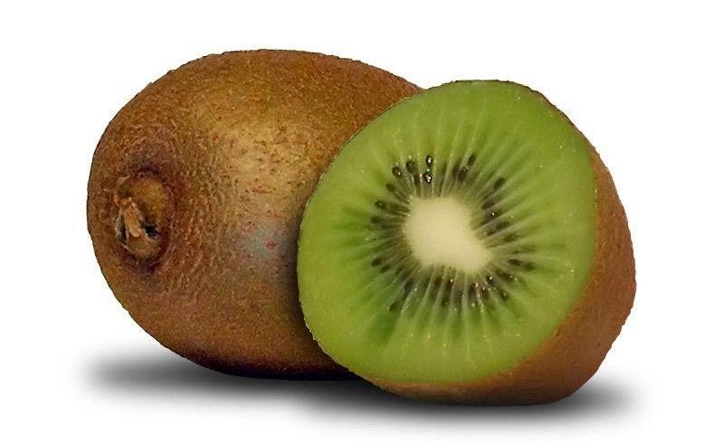
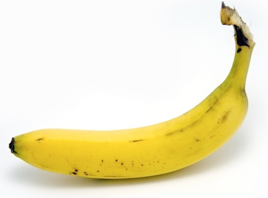
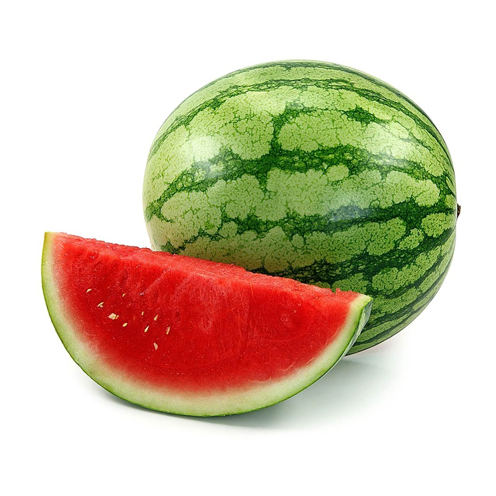

Que es una fruta?
Se denomina fruta a aquellos frutos comestibles obtenidos de plantas cultivadas o silvestres que, por su sabor generalmente dulce-acidulado, su aroma intenso y agradable y sus propiedades nutritivas, suelen consumirse mayormente en su estado fresco, como jugo o como postre (y en menor medida, en otras preparaciones), una vez alcanzada la madurez organoléptica, o luego de ser sometidos a cocción.

